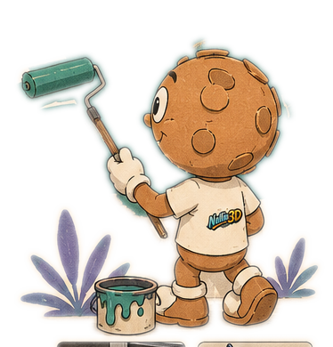
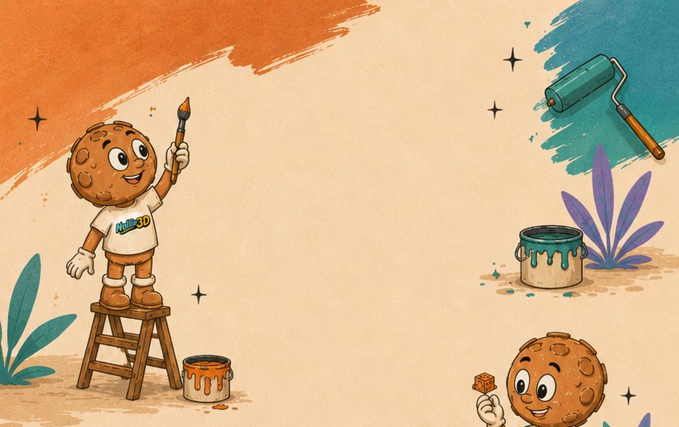
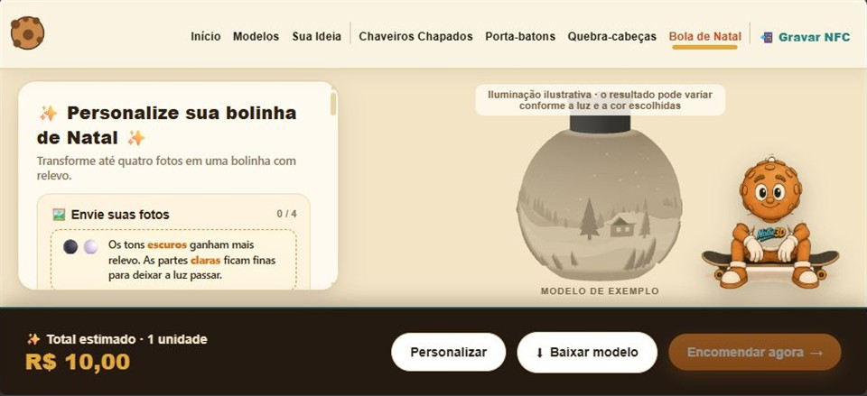
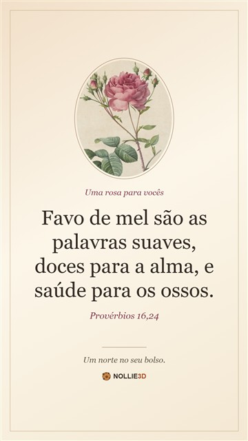
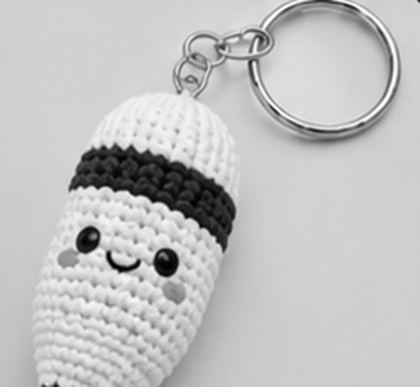

Engenharia reversa
Partimos da amostra e das medidas. Reconstruímos a geometria, ajustamos as folgas e usamos um protótipo para conferir o encaixe.
Cartão profissional
Estudante de Engenharia Mecânica · Nollie 3D
Comecei a modelar em 3D em 2021. Hoje, na Nollie, cuido do desenho da peça, do protótipo e das ferramentas que você usa para personalizar seu pedido.


Perfil profissional
Criei a marca, sua identidade visual e o site institucional. Além de modelar peças e desenvolver protótipos, atendo clientes, preparo orçamentos e acompanho a fabricação e o acabamento.
Modelagem para impressão e animações, renderização e preparação de arquivos para fabricação. Cada projeto começa com a referência e o uso que o cliente tem em mente.
Como assistente de informática, trabalhei com suporte a computadores, organização de redes, redes sociais institucionais e demandas administrativas do gabinete.
Como auxiliar técnico, executei serviços de polimento, higienização e vitrificação. Também organizei estoque, agendamentos, atendimento e pagamentos.
Produção, venda e controle de pedidos. Criei a identidade da marca e um personagem em 3D para sua comunicação nas redes sociais.
O estúdio
Somos dois irmãos que juntaram modelagem, tecnologia e cultura de rua. Um projeto pode começar com uma peça que precisa voltar a encaixar ou com uma ideia para a tela do celular.

Partimos da amostra e das medidas. Reconstruímos a geometria, ajustamos as folgas e usamos um protótipo para conferir o encaixe.
Do esboço ao modelo em Blender, estudamos forma, resistência e consumo de material antes de fabricar a peça.
Criamos páginas para celular, catálogos e configuradores com prévia do produto e cálculo de orçamento conforme as escolhas do cliente.
Uma foto vira enfeite, um nome vira chaveiro. Trabalhamos com cor, relevo, formato e acabamento para cada ocasião.
Ligamos chaveiros e objetos a cartões profissionais, mensagens e conteúdos que abrem no celular por aproximação.
Desenvolvemos a linguagem da marca e seus personagens para que produtos, site e conteúdo tenham a mesma assinatura.
Projetos da Nollie

Web + produto
O configurador converte a foto em relevo, mostra a peça iluminada e calcula o orçamento. A luz vem do próprio pisca-pisca.
Experimentar o gerador ↗
Objeto conectado
Um toque abre uma leitura para o casal, com uma pergunta e uma arte para os Stories.
Conhecer os chaveiros NFC ↗
Personalização
Além dos modelos do catálogo, a Nollie tem ferramentas para criar chaveiros, porta-batons e quebra-cabeças sob medida.
Abrir o personalizador ↗